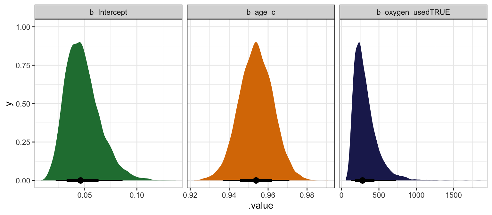
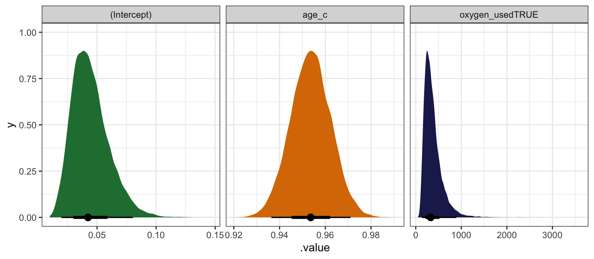
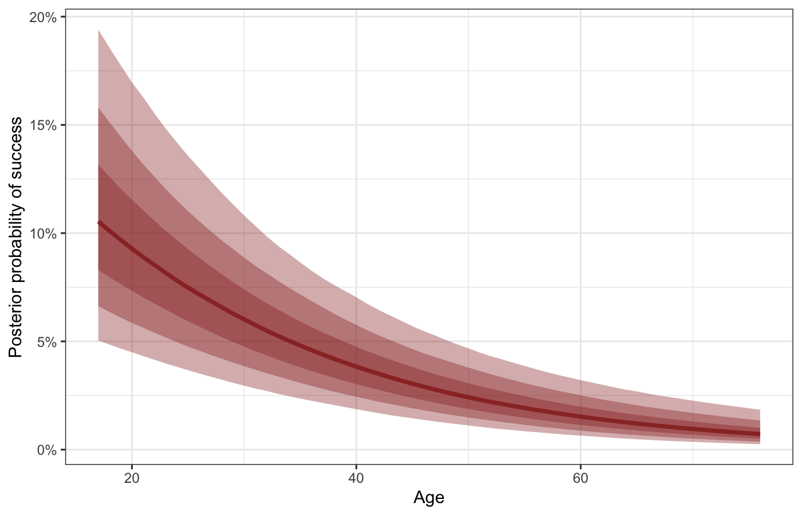
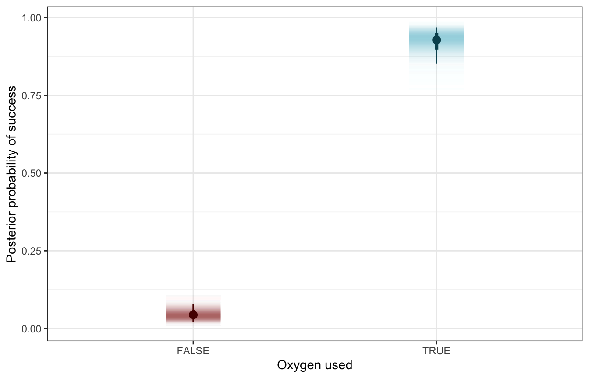
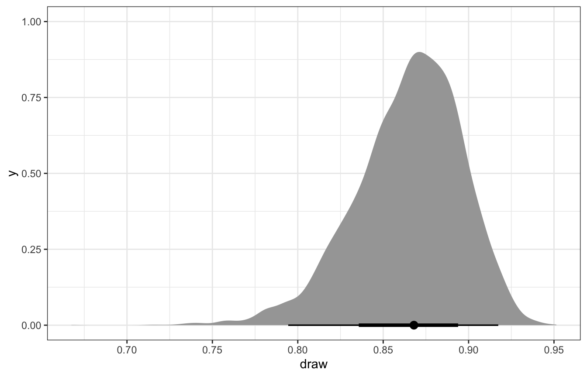
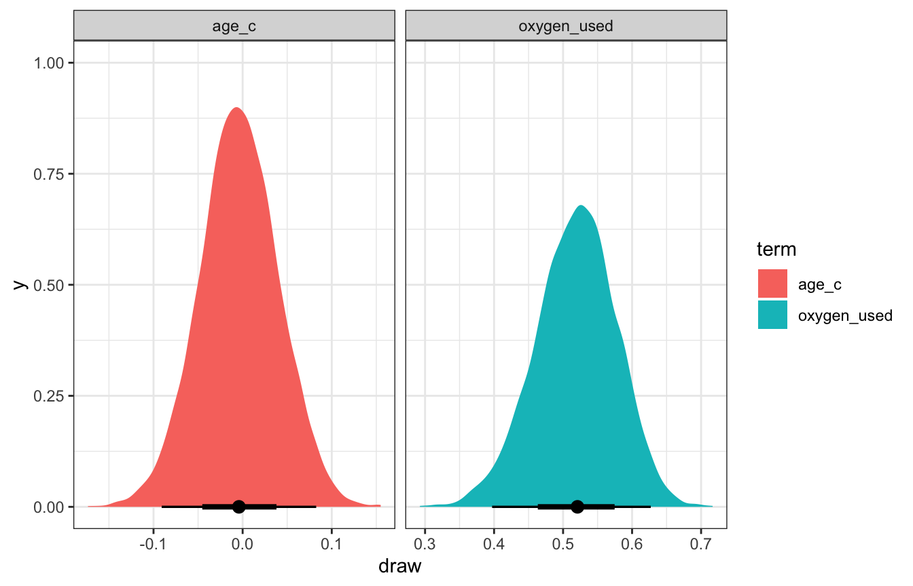
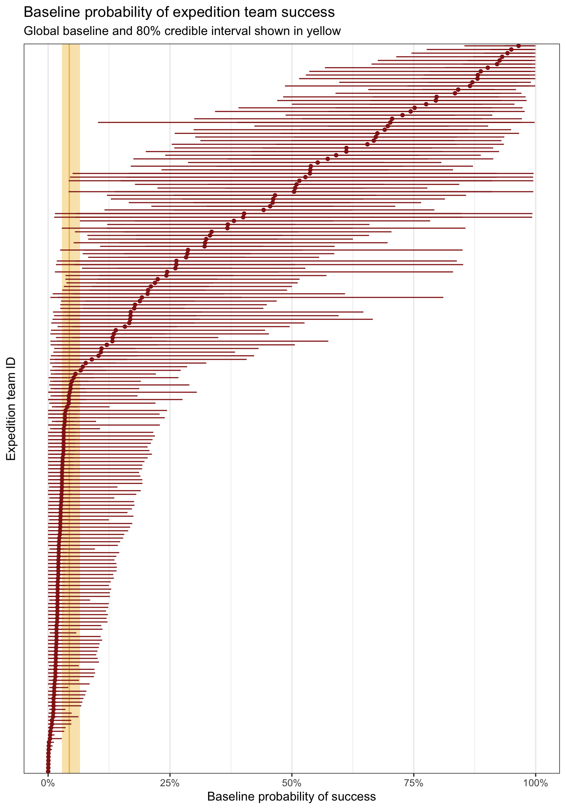
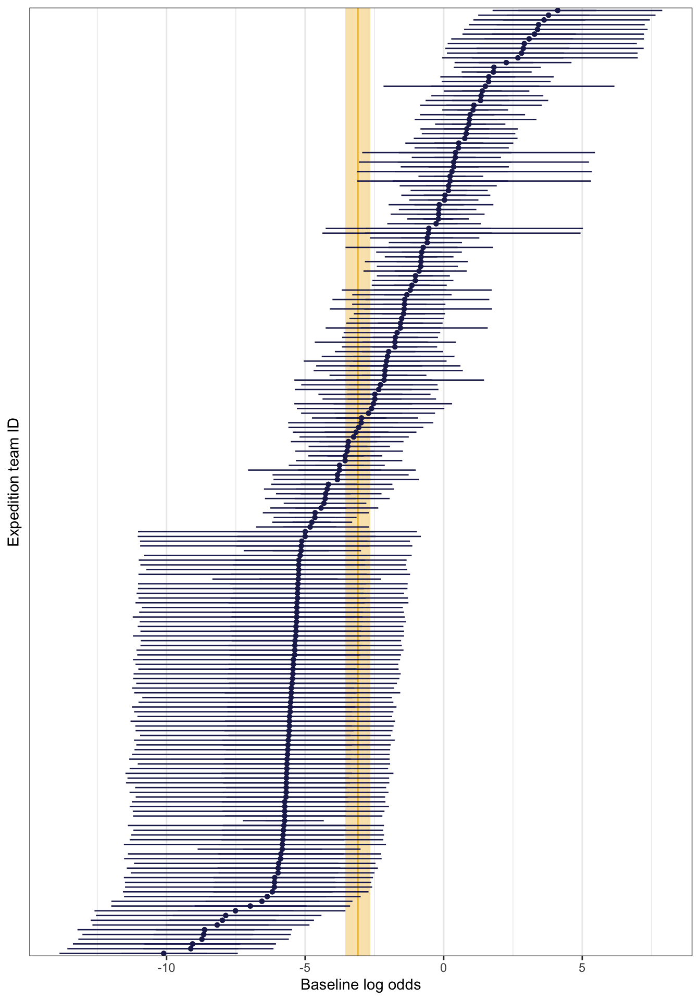
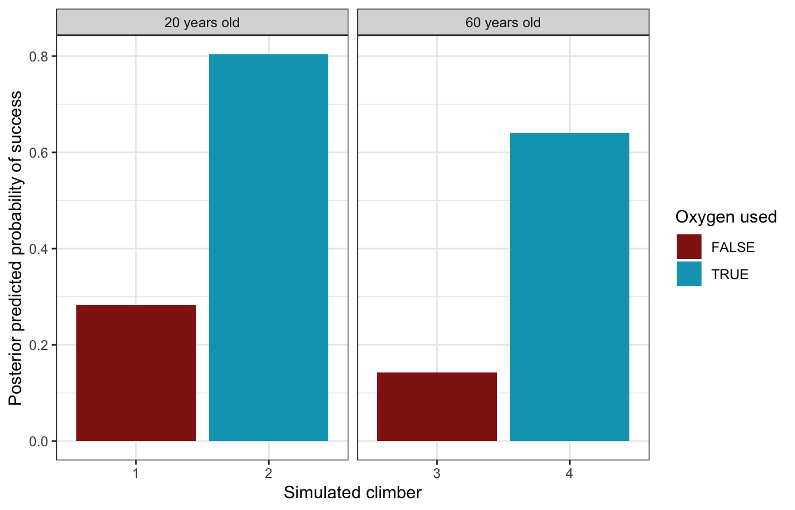

library(tidyverse)
library(brms)
library(rstanarm)
library(marginaleffects)
library(broom)
library(broom.mixed)
library(parameters)
library(tidybayes)
library(patchwork)
library(scales)
library(ggtext)
options(width = 100)
# tikz stuff
# Necessary for using dvisvgm on macOS
# See https://www.andrewheiss.com/blog/2021/08/27/tikz-knitr-html-svg-fun/
Sys.setenv(LIBGS = "/usr/local/share/ghostscript/9.53.3/lib/libgs.dylib.9.53")
font_opts <- list(dvisvgm.opts = "--font-format=woff")
# Plot stuff
clrs <- MetBrewer::met.brewer("Lakota", 6)
theme_set(theme_bw())
# Tell bayesplot to use the Lakota palette for things like pp_check()
# bayesplot::color_scheme_set(clrs)
# Tell bayesplot to use the viridis rocket palette for things like pp_check()
viridisLite::viridis(6, option = "rocket", end = 0.85, direction = -1) |>
# Take off the trailing "FF" in the hex codes
map_chr(~str_sub(., 1, 7)) |>
bayesplot::color_scheme_set()
# Seed stuff
set.seed(1234)
BAYES_SEED <- 1234
# Data stuff
data(climbers_sub, package = "bayesrules")
climbers <- climbers_sub %>%
select(expedition_id, member_id, success, year, season,
age, expedition_role, oxygen_used) |>
mutate(age_c = scale(age, scale = FALSE))
extract_attributes <- function(x) {
attributes(x) %>%
set_names(janitor::make_clean_names(names(.))) %>%
as_tibble() %>%
slice(1)
}
unscaled <- climbers %>%
select(ends_with("_c")) |>
summarize(across(everything(), ~extract_attributes(.))) |>
pivot_longer(everything()) |>
unnest(value) |>
split(~name)
# Access these things like so:
# unscaled$age_c$scaled_centerReading notes
Non-Normal Hierarchical Regression & Classification
All this multilevel modeling stuff also works with other distributional families. This chapter covers logistic regression and Poisson regression, but the same principles apply to any distribution supported by Stan. This chapter is a lot less detailed than chapters 15, 16, and 17, which spend a ton of time on the mechanics of multilevel models. Instead, this just shows how to add multiple levels to logit and Poisson models.
18.1: Hierarchical logistic regression
The general setup
With the logistic regression example in this chapter, we want to model the probability of a successful Himalayan climbing expedition. The data we have includes details about the expedition team, the year and season of the climb, and details about the climbers themselves, like their age, their role in the expedition, and whether or not they used oxygen during the climb.
Most climbers were unsuccessful and did not make it to the summit:
climbers |>
count(success) |>
mutate(prop = n / sum(n))
## # A tibble: 2 × 3
## success n prop
## <lgl> <int> <dbl>
## 1 FALSE 1269 0.611
## 2 TRUE 807 0.389These climbers never climb on their own. They always go in groups ranging from 5 to 44 people, and teams do not always unanimously finish together:
climbers_expeditions <- climbers |>
group_by(expedition_id) |>
summarize(n = n(), prop_success = mean(success))
p1 <- climbers_expeditions |>
ggplot(aes(x = n, y = prop_success)) +
geom_count(alpha = 0.8, color = clrs[5]) +
scale_size_area(max_size = 8, breaks = c(1, 5, 10)) +
labs(x = "Expedition team size",
y = "Proportion of expedition team that finished",
size = "Number of\nexpeditions")
p2 <- climbers_expeditions |>
ggplot(aes(x = prop_success)) +
geom_histogram(binwidth = 0.05, center = 0, color = "white", fill = clrs[5]) +
labs(x = "Proportion of expedition team that finished", y = "Count")
p1 + p2
We thus have a hierarchical/multilevel structure that looks like this, with climbers \(y_i\) nested in expedition teams \(j\):

Model building
In this example, we want to model whether an individual climber successfully reaches the summit. This is a binary outcome: 1 if yes, 0 if no. It’s also an individual outcome, nested in groups, so it has subscripts:
\[ \text{Success}_{i_j} = \begin{cases} 1 & \text{Yes} \\ 0 & \text{No} \\ \end{cases} \]
In the book they use two covariates to explain climbing success:
- \(X_{i_{j}1}\) or \(\text{Age}_{i_j}\): Age of climber \(i\) in expedition \(j\)
- \(X_{i_{j}2}\) or \(\text{Oxygen}_{i_j}\): Whether climber \(i\) in expedition \(j\) used oxygen
…so we’ll do that here too. At first glance, it doesn’t look like age makes much of a difference in the probability of success, but oxygen use matters a lot. Almost all of the successful climbers used oxygen; only a handful of oxygen-users were unsuccessful:
climbers |>
ggplot(aes(x = age, y = success, color = oxygen_used)) +
geom_dots(aes(side = ifelse(success == TRUE, "bottom", "top")),
pch = 19, scale = 0.6) +
scale_y_discrete(expand = expansion(mult = 0.1)) +
scale_color_manual(values = c(clrs[3], clrs[1])) +
labs(x = "Age", y = "Success", color = "Oxygen used")
Instead of building up this model step-by-step like in previous chapters, we’ll just define it all at once here:
\[ \begin{aligned} \text{Success}_{i_j} &\sim \operatorname{Bernoulli}(\pi_{i_j}) & \text{Probability of success for climber}_i \text{ in team}_j \\ \operatorname{logit}(\pi_{i_j}) &= \beta_{0_j} + \beta_1\, \text{Age}_{i_j} + \beta_2\, \text{Oxygen}_{i_j} & \text{Model for probability} \\ \beta_{0_j} &\sim \mathcal{N}(\beta_0, \sigma_0) & \text{Team-specific intercepts, or baseline probabilities} \\ \\ \beta_{0_c} &\sim \mathcal{N}(0, 2.5) & \text{Prior for global average success rate} \\ \beta_1 &\sim \mathcal{N}(0, 2.5) & \text{Prior for global age effect, holding oxygen constant} \\ \beta_1 &\sim \mathcal{N}(0, 2.5) & \text{Prior for global oxygen effect, holding age constant} \\ \sigma_0 &\sim \operatorname{Exponential}(1) & \text{Prior for between-team variability} \end{aligned} \]
Or with offset-based notation:
\[ \begin{aligned} \text{Success}_{i_j} &\sim \operatorname{Bernoulli}(\pi_{i_j}) & \text{Probability of success for climber}_i \text{ in team}_j \\ \operatorname{logit}(\pi_{i_j}) &= (\beta_0 + b_{0_j}) + \beta_1\, \text{Age}_{i_j} + \beta_2\, \text{Oxygen}_{i_j} & \text{Model for probability} \\ b_{0_j} &\sim \mathcal{N}(0, \sigma_0) & \text{Team-specific offsets from global success rate} \\ \\ \beta_{0_c} &\sim \mathcal{N}(0, 2.5) & \text{Prior for global average success rate} \\ \beta_1 &\sim \mathcal{N}(0, 2.5) & \text{Prior for global age effect, holding oxygen constant} \\ \beta_1 &\sim \mathcal{N}(0, 2.5) & \text{Prior for global oxygen effect, holding age constant} \\ \sigma_0 &\sim \operatorname{Exponential}(1) & \text{Prior for between-team variability} \end{aligned} \]
Posterior simulation and analysis
We can run this model by including (1 | expedition_id) for the random team intercepts:
priors <- c(prior(normal(0, 2.5), class = Intercept),
prior(normal(0, 2.5), class = b),
prior(exponential(1), class = sd))
model_success_brms <- brm(
success ~ age_c + oxygen_used + (1 | expedition_id),
data = climbers,
family = bernoulli(link = "logit"),
prior = priors,
chains = 4, cores = 4, iter = 4000, threads = threading(2), seed = BAYES_SEED,
backend = "cmdstanr", refresh = 0,
file = "18-manual_cache/success-brms"
)We’ll keep the autoscaled priors here because rstan complains about init issues otherwise?
model_success_rstanarm <- stan_glmer(
success ~ age_c + oxygen_used + (1 | expedition_id),
data = climbers, family = binomial,
prior_intercept = normal(0, 2.5, autoscale = TRUE),
prior = normal(0, 2.5, autoscale = TRUE),
prior_covariance = decov(reg = 1, conc = 1, shape = 1, scale = 1),
chains = 4, cores = 4, iter = 5000*2, seed = 84735, refresh = 0)Global analysis
First we’ll look at what this model says about a typical climber, which involves the \(\beta_0\), \(\beta_1\), and \(\beta_2\) terms:
model_success_brms |>
tidy(effects = c("fixed"), conf.level = 0.8) |>
select(-component)
## # A tibble: 3 × 6
## effect term estimate std.error conf.low conf.high
## <chr> <chr> <dbl> <dbl> <dbl> <dbl>
## 1 fixed (Intercept) -3.09 0.349 -3.54 -2.65
## 2 fixed age_c -0.0473 0.00913 -0.0589 -0.0358
## 3 fixed oxygen_usedTRUE 5.65 0.457 5.08 6.25Odds ratio-scale coefficients:
# There's a tiny bug in broom.mixed when exponentiating, so we'll use
# parameters::model_parameters() instead
model_success_brms %>%
model_parameters(centrality = "mean", dispersion = TRUE,
test = FALSE, verbose = FALSE, ci_method = "hdi", ci = 0.8,
exponentiate = TRUE)
## Parameter | Mean | SD | 80% CI | Rhat | ESS
## ------------------------------------------------------------------------
## (Intercept) | 0.05 | 0.35 | [ 0.03, 0.07] | 1.003 | 1359.00
## age_c | 0.95 | 9.13e-03 | [ 0.94, 0.96] | 1.000 | 7270.00
## oxygen_usedTRUE | 284.45 | 0.46 | [157.94, 500.89] | 1.002 | 2508.00model_success_brms |>
gather_draws(`^b_.*`, regex = TRUE) |>
ungroup() |>
mutate(.value = exp(.value),
.variable = fct_inorder(.variable)) |>
ggplot(aes(x = .value, fill = .variable)) +
stat_halfeye(normalize = "xy") +
scale_fill_manual(values = c(clrs[5], clrs[4], clrs[6]), guide = "none") +
facet_wrap(vars(.variable), scales = "free_x")
model_success_rstanarm |>
tidy(effects = c("fixed"),
conf.int = TRUE, conf.level = 0.8)
## # A tibble: 3 × 5
## term estimate std.error conf.low conf.high
## <chr> <dbl> <dbl> <dbl> <dbl>
## 1 (Intercept) -3.16 0.355 -3.63 -2.72
## 2 age_c -0.0475 0.00922 -0.0593 -0.0358
## 3 oxygen_usedTRUE 5.79 0.474 5.20 6.43# There's a tiny bug in broom.mixed when exponentiating, so we'll use
# parameters::model_parameters() instead
model_success_rstanarm %>%
model_parameters(centrality = "mean", dispersion = TRUE, prior = FALSE,
test = FALSE, verbose = FALSE, ci_method = "hdi", ci = 0.8,
exponentiate = TRUE)
## Parameter | Mean | SD | 80% CI | Rhat | ESS
## -------------------------------------------------------------------------
## (Intercept) | 0.04 | 0.36 | [ 0.03, 0.07] | 1.001 | 3980.00
## age_c | 0.95 | 9.21e-03 | [ 0.94, 0.96] | 1.000 | 26332.00
## oxygen_usedTRUE | 332.40 | 0.48 | [180.00, 608.64] | 1.001 | 8012.00model_success_rstanarm |>
gather_draws(`(Intercept)`, age_c, oxygen_usedTRUE) |>
ungroup() |>
mutate(.value = exp(.value),
.variable = fct_inorder(.variable)) |>
ggplot(aes(x = .value, fill = .variable)) +
stat_halfeye(normalize = "xy") +
scale_fill_manual(values = c(clrs[5], clrs[4], clrs[6]), guide = "none") +
facet_wrap(vars(.variable), scales = "free_x")
Here’s how to interpret all these coefficients, using the brms results:
Intercept or \(\beta_0\)
The posterior mean for \(\beta_0\) is -3.09, but that’s weird and on the logit scale. We can convert this to the probability scale with \(\frac{e^{-3.09}}{1 + e^{-3.09}}\) or with plogis(), which is 0.043. This means that the posterior mean probability of success for a climber of average age (36.96 years) and when not using oxygen is 4.3%, and there’s an 80% chance it’s between 2.8% and 6.6%.
Age effect or \(\beta_1\)
The posterior mean for \(\beta_1\) is -0.047, but that’s also weird and logit-ed. We can exponentiate it (\(e^{-0.047}\)) and get a mean posterior odds ratio of 0.954, with an 80% credible interval of 0.943–0.965). A one-year increase in a typical climber’s age makes climbing success 4.6% less likely (with an 80% credible interval of 3.5%–5.7%).
We can also convert these results to a much more manageable probability scale, but that’s a little trickier now that we’re working with multiple covariates. We can’t just do this, since we also have a b2 to deal with:
plogis(b0 + b1) - plogis(b0)Instead, we can use the magical marginaleffects package to get probability-scale estimates. First we’ll plot the predicted probabilities of success as age increases, holding oxygen use constant (as a no). Note that we include re_formula = NA to omit any random effects—this only uses the global parameters:
# Fast automatic version:
# plot_cap(model_success_brms, condition = "age_c", re_formula = NA)
datagrid(model = model_success_brms,
age_c = seq(17, 76, by = 1) - unscaled$age_c$scaled_center) |>
add_epred_draws(model_success_brms, re_formula = NA) |>
mutate(age = age_c + unscaled$age_c$scaled_center) |>
ggplot(aes(x = age, y = .epred)) +
stat_lineribbon(color = clrs[3], fill = clrs[3], alpha = 0.35) +
scale_y_continuous(labels = label_percent()) +
labs(x = "Age", y = "Posterior probability of success")
Successful expeditions are most likely among younger climbers, and as a typical climber ages, the probability of success decreases. We can get exact estimates of the slope of this posterior with marginaleffects().
mfx_success <- model_success_brms |>
marginaleffects(newdata = datagrid(age_c = seq(17, 76, by = 1) -
unscaled$age_c$scaled_center),
variables = "age_c",
type = "response") |>
posteriordraws() |>
mutate(age = age_c + unscaled$age_c$scaled_center)
mfx_success |>
ggplot(aes(x = age, y = draw * 100)) +
stat_lineribbon(alpha = 0.25, fill = clrs[6], color = clrs[6]) +
labs(x = "Age",
y = "Percentage point change in\nprobability of climbing success")
We can pick out the slope at a few of these different ages:
mfx_success |>
filter(age %in% c(18, 40, 60)) |>
group_by(age) |>
summarize(mean_slope = mean(draw),
conf.low = mean(conf.low),
conf.high = mean(conf.high)) |>
mutate(across(c(mean_slope, conf.low, conf.high), ~ . * 100))
## # A tibble: 3 × 4
## age mean_slope conf.low conf.high
## <dbl> <dbl> <dbl> <dbl>
## 1 18 -0.339 -0.925 -0.0696
## 2 40 -0.134 -0.384 -0.0291
## 3 60 -0.0543 -0.158 -0.0118For a typical young climber (18 years old), a one-year increase in age is associated with a posterior mean -0.339 percentage point decrease in the probability of success. That’s a sizable drop! For a typical middle-aged climber (40 years old), getting older is associated with a smaller -0.134 percentage point drop in probability, while older climbers (60 years old) see an even smaller -0.054 percentage point decline. Age thus seems to matter the most for younger climbers—it doesn’t have an effect on the typical older climber.
Oxygen effect or \(\beta_2\)
The posterior mean for \(\beta_2\) is 5.651 in the log odds world. Exponentiating it (\(e^{5.651}\)) gives us a massive mean posterior odds ratio of 284.446, with an 80% credible interval of 160.629–515.843). Holding age constant, oxygen use in a typical climber increases the odds of success by 161–516 times! Wild!
Let’s translate this to probabilities. Holy crap there’s a massive difference the probability of success:
datagrid(model = model_success_brms,
oxygen_used = c(TRUE, FALSE)) |>
add_epred_draws(model_success_brms, re_formula = NA) |>
ggplot(aes(x = oxygen_used, y = .epred, fill = oxygen_used, color = oxygen_used)) +
stat_gradientinterval(width = 0.25) +
scale_fill_manual(values = c(clrs[3], clrs[1]), guide = "none") +
scale_color_manual(values = colorspace::darken(c(clrs[3], clrs[1]), 0.5), guide = "none") +
labs(x = "Oxygen used", y = "Posterior probability of success")
To calculate the exact difference we could just use the results from add_epred_draws() and do some dplyr group_by() and summarize() and subtraction work, or we can use tidybaes’s compare_levels() to do the same thing. This is a marginal effect at user-specified values.
datagrid(model = model_success_brms,
oxygen_used = c(TRUE, FALSE)) |>
add_epred_draws(model_success_brms, re_formula = NA) |>
compare_levels(variable = .epred, by = oxygen_used) |>
ggplot(aes(x = .epred)) +
stat_halfeye()
Alternatively, we can use marginaleffects::comparisons() to calculate actual average marginal effects (or rather, group contrasts, since strictly speaking, marginal effects are partial derivatives). Instead of feeding the model a single average value for age, we’ll plug in each original row of the data into the model and get one contrast per row.
mfx_cmp_success <- model_success_brms |>
comparisons(variables = "oxygen_used", re_formula = NA)nrow(mfx_cmp_success)
## [1] 2076
nrow(climbers)
## [1] 2076mfx_cmp_success |>
posteriordraws() |>
group_by(drawid) |>
summarize(draw = mean(draw)) |>
ggplot(aes(x = draw)) +
stat_halfeye()
For even more bonus fun, we can actually do something new with marginaleffects and integrate out the random effects (see this too for an example). So far, we’ve been using re_formula = NA to ignore the expedition team effects entirely. If we use re_formula = NULL to include them, we either have to (1) specify one specific expedition team ID, or (2) invent a new hypothetical team that’s based on the the global average. Alternatively, we can create a bunch of new hypothetical teams (like 100) and calculate either the marginal effects or contrasts for each coefficient in those hypothetical teams, then take the average (see this vignette for brmsmargins for more details). Fortunately marginalffects can handle all this for us:
mfx_success_integrated_out <- comparisons(
model_success_brms,
# 100 fake expedition IDs
newdata = datagrid(expedition_id = -1:-100),
allow_new_levels = TRUE,
sample_new_levels = "gaussian")mfx_success_integrated_out |> summary()
## Term Contrast Effect 2.5 % 97.5 %
## 1 age_c (x + 1) - x -0.004151 -0.09081 0.08254
## 2 oxygen_used TRUE - FALSE 0.520871 0.39713 0.62711
##
## Model type: brmsfit
## Prediction type: responsemfx_success_integrated_out |>
posteriordraws() |>
group_by(drawid, term) |>
summarize(draw = mean(draw)) |>
ggplot(aes(x = draw, fill = term)) +
stat_halfeye() +
facet_wrap(vars(term), scales = "free_x")
Age and oxygen at the same time
For fun, here’s what the effect of both age and oxygen look like simultanously:
datagrid(model = model_success_brms,
oxygen_used = c(TRUE, FALSE),
age_c = seq(17, 76, by = 1) - unscaled$age_c$scaled_center) |>
add_epred_draws(model_success_brms, re_formula = NA, ndraws = 100) |>
mutate(age = age_c + unscaled$age_c$scaled_center) |>
ggplot(aes(x = age, y = .epred, color = oxygen_used)) +
geom_line(aes(group = paste(oxygen_used, .draw)), alpha = 0.35) +
scale_y_continuous(labels = label_percent()) +
scale_color_manual(values = c(clrs[3], clrs[1])) +
labs(x = "Age", y = "Posterior probability of success",
color = "Oxygen used")
Team-specific analysis
Next we can look at the team-specific details, or the offsets from the baseline probability of success:
\[ B_0 + b_{0_j} \]
There’s a surprising amount of variation in success across teams here. Some have a predicted 97% baseline chance of success; others have practically no baseline chance of success. Here are the top 5 and bottom 5 as an example:
team_baselines <- model_success_brms |>
epred_draws(tibble(expedition_id = unique(climbers$expedition_id),
age_c = 0, oxygen_used = FALSE)) |>
ungroup() |>
mutate(expedition_id = fct_reorder(factor(expedition_id), .epred, .fun = mean))
team_baselines |>
group_by(expedition_id) |>
summarize(avg = mean(.epred)) |>
arrange(desc(avg)) |>
slice(1:5, 196:200)
## # A tibble: 10 × 2
## expedition_id avg
## <fct> <dbl>
## 1 TUKU16301 0.965
## 2 SPHN93101 0.950
## 3 MANA84101 0.942
## 4 AMAD11321 0.931
## 5 AMAD98311 0.926
## 6 MANA82401 0.000651
## 7 MAKA08112 0.000606
## 8 EVER07194 0.000402
## 9 MANA08324 0.000365
## 10 EVER19112 0.000112And for bonus fun, here are all 200 teams simultaneously:
global_baseline <- model_success_brms |>
tidy(effects = c("fixed"), conf.level = 0.8) |>
filter(term == "(Intercept)") |>
mutate(across(c(estimate, conf.low, conf.high), plogis))
team_baselines |>
ggplot(aes(x = .epred, y = expedition_id)) +
annotate(geom = "rect", ymin = -Inf, ymax = Inf,
xmin = global_baseline$conf.low, xmax = global_baseline$conf.high,
fill = clrs[2], alpha = 0.4) +
geom_vline(xintercept = global_baseline$estimate, color = clrs[2]) +
stat_pointinterval(color = clrs[3], size = 0.1,
point_interval = "mean_qi") +
scale_x_continuous(labels = label_percent()) +
labs(x = "Baseline probability of success", y = "Expedition team ID",
title = "Baseline probability of expedition team success",
subtitle = "Global baseline and 80% credible interval shown in yellow") +
theme(axis.text.y = element_blank(), axis.ticks.y = element_blank(),
panel.grid.major.y = element_blank())
We can also look at how these team-specific offsets influence the age-success relationship. Here we’ll plot three arbitrarily chosen teams (I just scrolled through the list and picked at random). All the model does here is shift the baseline intercept around—the slope is the same in all three panels (but looks difference because of logit slopes are nonlinear and weird).
climbers_small <- climbers |>
filter(expedition_id %in% c("AMAD81101", "AMAD03107", "EVER07194"))
climbers_small |>
add_epred_draws(model_success_brms, ndraws = 250) |>
ggplot(aes(x = age, y = as.numeric(success))) +
geom_line(aes(y = .epred, group = paste(expedition_id, .draw),
color = expedition_id),
alpha = 0.2, size = 0.3) +
geom_point(data = climbers_small, aes(color = expedition_id)) +
scale_color_manual(values = c(clrs[1], clrs[2], clrs[5]), guide = "none") +
facet_wrap(vars(expedition_id))
## Warning: Using `size` aesthetic for lines was deprecated in ggplot2 3.4.0.
## ℹ Please use `linewidth` instead.
Between-team variability
With linear regression in chapter 17, we had two forms of variability:
- \(\sigma_y\) for the variability within units nested in groups (i.e. the scale term in \(Y_{i_j} \sim \mathcal{N}(\mu_{i_j}, \sigma_{i_j})\))
- \(\sigma_0\) for the variability between groups (i.e. the variation around the random offsets in \(b_{0_j} \sim \mathcal{N}(0, \sigma_0)\))
In logistic regression with a Bernoulli model for \(Y\), we don’t have a corresponding \(\sigma_y\) term for variability within expedition teams. We do have a \(\sigma_0\) term for variability between teams, so we can look at that:
model_success_brms |>
tidy(effects = c("ran_pars"), conf.level = 0.8) |>
select(-component)
## # A tibble: 1 × 7
## effect group term estimate std.error conf.low conf.high
## <chr> <chr> <chr> <dbl> <dbl> <dbl> <dbl>
## 1 ran_pars expedition_id sd__(Intercept) 3.57 0.337 3.16 4.02model_success_rstanarm |>
tidy(effects = c("ran_pars"),
conf.int = TRUE, conf.level = 0.8)
## # A tibble: 1 × 3
## term group estimate
## <chr> <chr> <dbl>
## 1 sd_(Intercept).expedition_id expedition_id 3.63\(\sigma_0\) (or sd__(Intercept) for the expedition_id group) is 3.57, which is the amount of variance in the log odds of the global intercept, so the average baseline log odds of success varies between teams with a standard deviation of 3.57 logits/log odds. We can see this if we look at all the team-specific intercepts on the log odds scale. The global average is -3.09, marked in yellow, and there’s a ton of variation around that average—a standard deviation of 3.57.
According to Isabella Ghement, the “sd(Intercept) term is a quantification of sorts of how ‘similar’ the intercepts for different [teams] … are”. If it’s a big value, the teams aren’t super similar; if it’s small, the teams are pretty similar. These teams are not similar at all.
team_baselines_logit <- model_success_brms |>
linpred_draws(tibble(expedition_id = unique(climbers$expedition_id),
age_c = 0, oxygen_used = FALSE)) |>
ungroup() |>
mutate(expedition_id = fct_reorder(factor(expedition_id), .linpred, .fun = mean))
global_baseline_logit <- model_success_brms |>
tidy(effects = c("fixed"), conf.level = 0.8) |>
filter(term == "(Intercept)")
team_baselines_logit |>
ggplot(aes(x = .linpred, y = expedition_id)) +
annotate(geom = "rect", ymin = -Inf, ymax = Inf,
xmin = global_baseline_logit$conf.low, xmax = global_baseline_logit$conf.high,
fill = clrs[2], alpha = 0.4) +
geom_vline(xintercept = global_baseline_logit$estimate, color = clrs[2]) +
stat_pointinterval(color = clrs[6], size = 0.1,
point_interval = "mean_qi") +
labs(x = "Baseline log odds", y = "Expedition team ID") +
theme(axis.text.y = element_blank(), axis.ticks.y = element_blank(),
panel.grid.major.y = element_blank())
To make this more interpretable, according to Isabella Ghement (and others in that super helpful Twitter thread), we can unlogit this with plogis(Intercept ± 2*sd(Intercept)). This gives us a massive range in probability land!
model_success_brms |>
tidy(effects = c("fixed", "ran_pars")) |>
filter(str_detect(term, "Intercept")) |>
select(term, estimate) |>
mutate(term = janitor::make_clean_names(term)) |>
pivot_wider(names_from = term, values_from = estimate) |>
mutate(range_low = plogis(intercept - (2 * sd_intercept)),
range_high = plogis(intercept + (2 * sd_intercept))) |>
mutate(across(starts_with("range"), ~label_percent(accuracy = 0.01)(.)))
## # A tibble: 1 × 4
## intercept sd_intercept range_low range_high
## <dbl> <dbl> <chr> <chr>
## 1 -3.09 3.57 0.00% 98.29%To see this better, we can look back look back at the plot with all 200 team baseline probabilities. There’s a ton of variation away from that thin yellow baseline average probability. We’ve got sizable variation here.
But also, in the words of TJ Mahr, “don’t overthink it.” :)
We can get an ICC here like we did with Gaussian regression, but I’m not entirely sure what it means. In Gaussian land, this is the proportion of variability that is attributable to between-team differences. Here, we don’t have within-team differences, so I’m not sure what goes in the denominator of the ratio. But it feels like the ICC we used earlier, so it probably means something like 80ish% of the variability in success rates comes from between-team differences? I guess?
performance::icc(model_success_brms, by_group = TRUE)
## # ICC by Group
##
## Group | ICC
## ---------------------
## expedition_id | 0.795Posterior classification
To see how this model predict/classifies new climbers, we can create a set of simulated climbers with different combinations of ages and oxygen use:
binary_prediction <- model_success_brms |>
predicted_draws(expand_grid(age_c = c(20, 60) - unscaled$age_c$scaled_center,
oxygen_used = c(FALSE, TRUE), expedition_id = "New"),
allow_new_levels = TRUE)
binary_prediction |>
mean_qi(.prediction) |>
mutate(age = age_c + unscaled$age_c$scaled_center,
age = glue::glue("{age} years old")) |>
ggplot(aes(x = factor(.row), y = .prediction, fill = oxygen_used)) +
geom_col() +
scale_fill_manual(values = c(clrs[3], clrs[1])) +
facet_wrap(vars(age), scales = "free_x") +
labs(x = "Simulated climber", y = "Posterior predicted probability of success",
fill = "Oxygen used")
Model evaluation
How fair is the model?
Great.
The data we used are part of public record and we do not foresee our analysis having any negative impact on individuals or society. (Again, boring answers to the question of fairness are the best kind.)
How wrong is the model?
We can use pp_check() to compare the posterior predictions to the actual data, both with bars:
pp_check(model_success_brms, ndraws = 100, type = "bars")
pp_check(model_success_rstanarm, n = 100, plotfun = "bars")
…and with a histogram that shows the proportion of successful climbers in each simulated dataset compared with the observed probability of success. Most simulated posterior datasets saw successful climbs ≈42ish% of the the time, with some as low as 36% and some as high as 42%. That seems good and reasonable.
pp_check(model_success_brms, type = "stat") +
labs(x = "Probability of success")
pp_check(model_success_rstanarm, plotfun = "stat") +
labs(x = "Probability of success")
How accurate are the model’s posterior classifications?
To check the accuracy of our predictions, we can find the overall classification accuracy rate, the true negative rate (specificity), and the true positive rate (sensitivity rate)
| \(\hat{Y} = 0\) | \(\hat{Y} = 1\) | |
|---|---|---|
| \(Y = 0\) | a | b |
| \(Y = 1\) | c | d |
- Overall classification accuracy rate = \(\frac{a + d}{a + b + c + d}\)
- True negative rate, or specificity = \(\frac{a}{a + b}\)
- True positive rate, or sensitivity = \(\frac{c}{c + d}\)
Let’s make predictions with the existing data and classify them using a 50% cutoff—if the probability is above 50%, we’ll call it successful.
success_preds <- model_success_brms |>
predicted_draws(climbers)
success_classifications <- success_preds |>
group_by(.row) |>
summarize(success_prob = mean(.prediction),
success_actual = success[1]) |>
mutate(success_pred = success_prob >= 0.5)
success_classifications |>
count(success_actual, success_pred) |>
pivot_wider(names_from = "success_pred", values_from = "n")
## # A tibble: 2 × 3
## success_actual `FALSE` `TRUE`
## <lgl> <int> <int>
## 1 FALSE 1173 96
## 2 TRUE 78 729
success_classifications |>
janitor::tabyl(success_actual, success_pred) |>
janitor::adorn_totals(c("row", "col"))
## success_actual FALSE TRUE Total
## FALSE 1173 96 1269
## TRUE 78 729 807
## Total 1251 825 2076Based on these numbers, we have these accuracy rates:
- Overall accuracy (\(\frac{a + d}{a + b + c + d}\)): 91.6%
- Specificity, or true negative rate (\(\frac{a}{a + b}\)): 92.4%
- Sensitivity, or true positive rate (\(\frac{c}{c + d}\)): 90.3%
Wow, this is a fantastic model. Use oxygen!
The model successfully predicts the outcomes for 91.6% of climbers. Because the consequences of failure are so high (injury and death), we should prioritize specificity here. We accurately predicted 92.4% of failed expeditions, which might not be great.
We can boost that specificity if we increase the probability cutoff and make it harder to predict success. In the book they settle on 0.65 (so a predicted probability of 65% is necessary to be considered a success). This lowers the sensitivity to 80ish%, lowers the overall accuracy to 90ish%, but boosts the specificity to 95ish%.
And that’s it! Complete analysis of a multilevel logistic regression model!